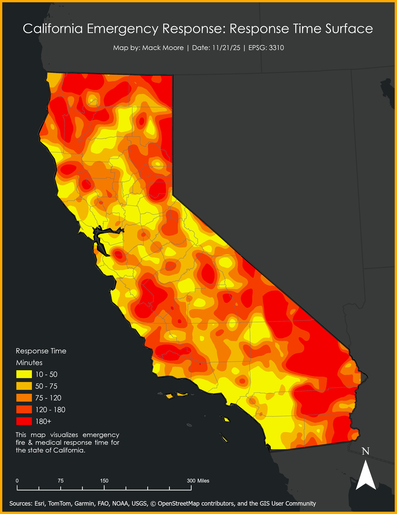

In this analysis of emegency response time for the state of California, I interpolated a cost surface for the amount of time it takes EMS to respond to emergencies.

This project utilized ArcPros Network Analysis tool to estimate emergency response time. For each firestation in California, I created least cost paths to incident (100m sample grid) to using speed limits as a constraint. Each sample point inherited the total emergency drive time. I interpolated the point data into a raster surface to be used in further analysis.